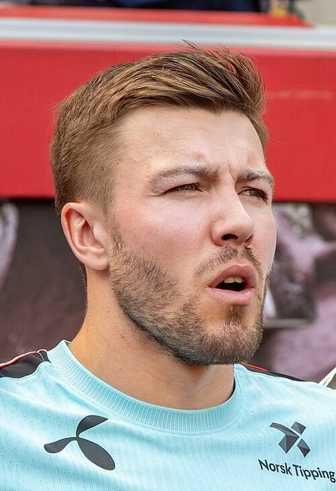
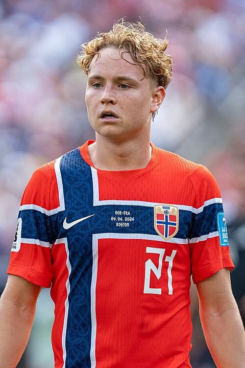
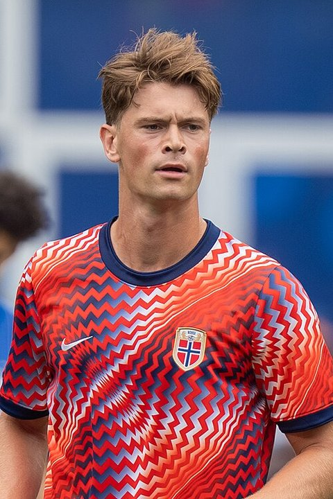
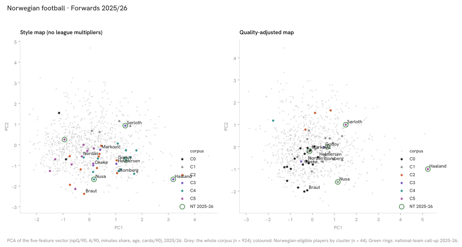
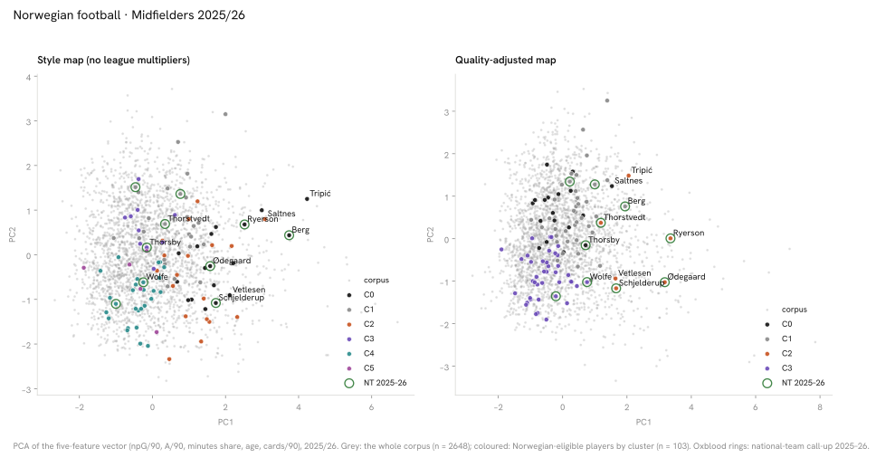
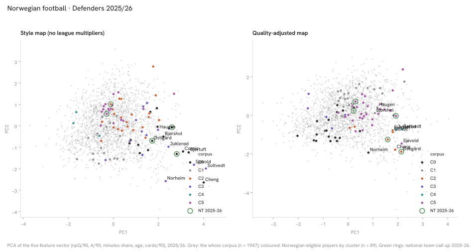

Showcase cards: 18 Norwegian players chosen by six selection rules, and the 2025/26 pool
18 cards, one player per position group under each of six selection rules.
How to read it: each card shows one player’s 2025/26 numbers, his cluster in the style and quality maps, the change since the previous season and his nearest historical analogs; the rule that chose him is at the foot. The atlas below plots every player-season of 2025/26.
How the 18 cards were chosen
Why these cards: one card per position group per rule, applied in this order — (a) highest goals + assists per 90, league-adjusted, (b) youngest national-team call-up, (c) most top-9 minutes among the 2026 FIFA World Cup squad, (d) most domestic-league minutes among the 2026 FIFA World Cup squad, (e) most top-9 minutes, (f) most domestic minutes under 23 without a top-9 season. A player already chosen by an earlier rule falls through to the next name, so a later row can show the second name by its measure. Rows group the six rules; the national-team core row holds two of them.
Style mapOlder forwards with moderate playing timeQuality mapHigh-card-rate forwards
Author’s reading (not computed)
Experienced forwards on managed minutes — median age 31, about 40 % of minutes, output at median. The impact or target forward used in rotation (Haaland, Sørloth, Marković).
Trajectory 2024/25 → 2025/26
↑change+0.17G+A / 90 adj.(one season, 2736 min → 2953 min)
Historical analogs at age 26 (d = distance on three standardised features: league-adjusted goals + assists per 90, minutes, league multiplier)
Alexander IsakSWE
ENG-Premier League 2024/25 · 2756 min · 0.73 ·
d = 0.92
Mateo ReteguiITA
ITA-Serie A 2024/25 · 2383 min · 0.77 ·
d = 1.16
Marcus RashfordENG
ENG-Premier League 2022/23 · 2879 min · 0.63 ·
d = 1.74
2026 FIFA World Cup
Selected as: highest goals + assists per 90, league-adjusted among FW.
Style mapHigh-card-rate midfieldersQuality mapProductive midfielders in top-five leagues
Author’s reading (not computed)
Ball-winning, duel-heavy midfielders — the card rate (about 2.5 times the midfield median) is the defining feature, production at the floor of the group. The destroyer profile, often in a double pivot (Berg, Elyounoussi, Ryerson).
Historical analogs at age 29 (d = distance on three standardised features: league-adjusted goals + assists per 90, minutes, league multiplier)
Julian BrandtGER
GER-Bundesliga 2024/25 · 2303 min · 0.38 ·
d = 0.06
Jens StageDEN
GER-Bundesliga 2024/25 · 2204 min · 0.39 ·
d = 0.11
Alassane PléaFRA
GER-Bundesliga 2021/22 · 2070 min · 0.36 ·
d = 0.33
2026 FIFA World Cup
Selected as: highest goals + assists per 90, league-adjusted among MF.
Style mapPrimary scorersQuality mapHigh-assist forwards in top-five leagues
Author’s reading (not computed)
Primary scorers — non-penalty goal rate nearly double the forward median on starter minutes (56 %). The finishing forward of a first-choice line (Larsen, Solbakken, Heggebø).
Trajectory 2024/25 → 2025/26
↓change−0.34G+A / 90 adj.(one season, 2587 min → 2307 min)
Historical analogs at age 26 (d = distance on three standardised features: league-adjusted goals + assists per 90, minutes, league multiplier)
VitinhaPOR
ITA-Serie A 2025/26 · 2226 min · 0.24 ·
d = 0.71
David OkerekeNGA
ITA-Serie A 2022/23 · 2266 min · 0.23 ·
d = 0.71
Walid CheddiraMAR
ITA-Serie A 2023/24 · 2120 min · 0.27 ·
d = 0.78
2026 FIFA World Cup
Selected as: most top-9 minutes among 2026 FIFA World Cup squad FW.
Veteran rotation midfielders — median age 30 on managed minutes (40 %), output at median, card rate above it. Experience kept in the squad rather than on the pitch every week (Berge, Ulvestad, Jenssen).
Trajectory 2024/25 → 2025/26
→change+0.01G+A / 90 adj.(one season, 2224 min → 2905 min)
Historical analogs at age 28 (d = distance on three standardised features: league-adjusted goals + assists per 90, minutes, league multiplier)
Nélson SemedoPOR
ENG-Premier League 2020/21 · 2983 min · 0.08 ·
d = 0.12
George BaldockGRE
ENG-Premier League 2020/21 · 2787 min · 0.09 ·
d = 0.18
Kyle Walker-PetersENG
ENG-Premier League 2024/25 · 2918 min · 0.10 ·
d = 0.21
2026 FIFA World Cup
Selected as: most top-9 minutes among 2026 FIFA World Cup squad MF.
Style mapEveryday starting defendersQuality mapHigh-assist defenders in top-five leagues
Author’s reading (not computed)
The defensive core — 85 % of minutes, output at the DF floor. Availability and continuity are the signal; production is not (Østigård, Cornic, Falchener).
Trajectory 2024/25 → 2025/26
↑change+0.11G+A / 90 adj.(one season, 2154 min → 2622 min)
Historical analogs at age 27 (d = distance on three standardised features: league-adjusted goals + assists per 90, minutes, league multiplier)
Jules KoundéFRA
ESP-La Liga 2024/25 · 2605 min · 0.11 ·
d = 0.33
Emanuele ValeriITA
ITA-Serie A 2024/25 · 2873 min · 0.14 ·
d = 0.34
Benjamin HenrichsGER
GER-Bundesliga 2023/24 · 2526 min · 0.13 ·
d = 0.36
2026 FIFA World Cup
Selected as: most top-9 minutes among 2026 FIFA World Cup squad DF.
The development tier and the largest forward cluster — median age 23, under 30 % of minutes, output just below median. Where most of the home pool's young forwards sit (Lauritsen, Arnstad, Brunes).
Trajectory 2024/25 → 2025/26
→change+0.01G+A / 90 adj.(one season, 2003 min → 2216 min)
Historical analogs at age 27 (d = distance on three standardised features: league-adjusted goals + assists per 90, minutes, league multiplier)
Lirim QamiliMKD
DEN-Superliga 2024/25 · 2059 min · 0.21 ·
d = 0.31
Peter ChristiansenDEN
NOR-Eliteserien 2025/26 · 2098 min · 0.22 ·
d = 0.38
Sebastian BergierPOL
POL-Ekstraklasa 2025/26 · 2278 min · 0.22 ·
d = 0.43
2026 FIFA World Cup
Selected as: most domestic minutes among 2026 FIFA World Cup squad FW.
Ball-winning, duel-heavy midfielders — the card rate (about 2.5 times the midfield median) is the defining feature, production at the floor of the group. The destroyer profile, often in a double pivot (Berg, Elyounoussi, Ryerson).
Trajectory 2024/25 → 2025/26
↑change+0.08G+A / 90 adj.(one season, 2610 min → 2292 min)
Historical analogs at age 29 (d = distance on three standardised features: league-adjusted goals + assists per 90, minutes, league multiplier)
Jordan LarssonSWE
DEN-Superliga 2025/26 · 2281 min · 0.20 ·
d = 0.03
Emrah BaşsanTUR
TUR-Süper Lig 2020/21 · 2283 min · 0.21 ·
d = 0.54
Miguel CardosoPOR
TUR-Süper Lig 2022/23 · 2333 min · 0.21 ·
d = 0.54
2026 FIFA World Cup
Selected as: most domestic minutes among 2026 FIFA World Cup squad MF.

Fredrik André BjørkanBodø/GlimtDF0.06G+A / 90 adj.↓ change · −0.06 G+A / 90 adj.Career →
The defensive core — 85 % of minutes, output at the DF floor. Availability and continuity are the signal; production is not (Østigård, Cornic, Falchener).
Trajectory 2024/25 → 2025/26
↓change−0.06G+A / 90 adj.(one season, 1792 min → 2457 min)
Historical analogs at age 28 (d = distance on three standardised features: league-adjusted goals + assists per 90, minutes, league multiplier)
Eirik SaunesNOR
NOR-Eliteserien 2025/26 · 2496 min · 0.05 ·
d = 0.10
Jesper TåjeNOR
NOR-Eliteserien 2024/25 · 2228 min · 0.04 ·
d = 0.34
Jacob RasmussenDEN
DEN-Superliga 2024/25 · 2520 min · 0.02 ·
d = 0.35
2026 FIFA World Cup
Selected as: most domestic minutes among 2026 FIFA World Cup squad DF.
The development tier and the largest forward cluster — median age 23, under 30 % of minutes, output just below median. Where most of the home pool's young forwards sit (Lauritsen, Arnstad, Brunes).
Historical analogs at age 21 (d = distance on three standardised features: league-adjusted goals + assists per 90, minutes, league multiplier)
Vinicius JúniorBRA
ESP-La Liga 2020/21 · 1969 min · 0.25 ·
d = 0.35
Jamie LewelingGER
GER-Bundesliga 2021/22 · 1959 min · 0.24 ·
d = 0.37
Emanuel EmeghaNED
FRA-Ligue 1 2023/24 · 2078 min · 0.27 ·
d = 0.61
2026 FIFA World Cup
Selected as: youngest national-team call-up among FW.

Andreas SchjelderupBenficaMF0.26G+A / 90 adj.—Career →
MFBenfica
Andreas Schjelderup
MF · 22 · Benfica (2026/27) · NT 2025–26
2025/26 · Benfica · POR-Primeira Liga
G+A / 90 adj.
0.26
Non-penalty goals / assists per 90
0.26 / 0.26
Minutes
1723 (58 %)
Style mapHigh-card-rate midfieldersQuality mapProductive midfielders in top-five leagues
Author’s reading (not computed)
Ball-winning, duel-heavy midfielders — the card rate (about 2.5 times the midfield median) is the defining feature, production at the floor of the group. The destroyer profile, often in a double pivot (Berg, Elyounoussi, Ryerson).
Historical analogs at age 22 (d = distance on three standardised features: league-adjusted goals + assists per 90, minutes, league multiplier)
Hákon HaraldssonISL
FRA-Ligue 1 2024/25 · 1755 min · 0.23 ·
d = 0.31
Sofiane DiopMAR
FRA-Ligue 1 2021/22 · 1948 min · 0.25 ·
d = 0.35
Francisco ConceiçãoPOR
POR-Primeira Liga 2023/24 · 1888 min · 0.22 ·
d = 0.37
2026 FIFA World Cup
Selected as: youngest national-team call-up among MF.

Henrik FalchenerVikingDF0.07G+A / 90 adj.—Career →
DFViking
Henrik Falchener
DF · 23 · Viking (2026/27) · NT 2025–26
2025/26 · Viking · NOR-Eliteserien
G+A / 90 adj.
0.07
Non-penalty goals / assists per 90
0.21 / 0.00
Minutes
2576 (99 %)
Style mapEveryday starting defendersQuality mapHigh-assist defenders in top-five leagues
Author’s reading (not computed)
The defensive core — 85 % of minutes, output at the DF floor. Availability and continuity are the signal; production is not (Østigård, Cornic, Falchener).
Historical analogs at age 23 (d = distance on three standardised features: league-adjusted goals + assists per 90, minutes, league multiplier)
Fredrik SjøvoldNOR
NOR-Eliteserien 2025/26 · 2594 min · 0.10 ·
d = 0.24
Mikkel RaknebergNOR
NOR-Eliteserien 2024/25 · 2311 min · 0.06 ·
d = 0.36
Mathias TønnessenNOR
NOR-Eliteserien 2025/26 · 2422 min · 0.02 ·
d = 0.45
2026 FIFA World Cup
Selected as: youngest national-team call-up among DF.
The development tier and the largest forward cluster — median age 23, under 30 % of minutes, output just below median. Where most of the home pool's young forwards sit (Lauritsen, Arnstad, Brunes).
Trajectory 2024/25 → 2025/26
→change+0.03G+A / 90 adj.(one season, 2707 min → 3039 min)
Historical analogs at age 29 (d = distance on three standardised features: league-adjusted goals + assists per 90, minutes, league multiplier)
Riad BajićBIH
TUR-Süper Lig 2022/23 · 2868 min · 0.20 ·
d = 0.27
Lennart ThyGER
NED-Eredivisie 2020/21 · 2782 min · 0.22 ·
d = 0.34
Victor EdvardsenSWE
NED-Eredivisie 2024/25 · 2740 min · 0.23 ·
d = 0.42
Ball-winning, duel-heavy midfielders — the card rate (about 2.5 times the midfield median) is the defining feature, production at the floor of the group. The destroyer profile, often in a double pivot (Berg, Elyounoussi, Ryerson).
Trajectory 2024/25 → 2025/26
→change+0.03G+A / 90 adj.(one season, 2428 min → 3375 min)
Historical analogs at age 23 (d = distance on three standardised features: league-adjusted goals + assists per 90, minutes, league multiplier)
Kodai SanoJPN
NED-Eredivisie 2025/26 · 3060 min · 0.15 ·
d = 0.42
Fisayo Dele-BashiruNGA
TUR-Süper Lig 2023/24 · 3035 min · 0.15 ·
d = 0.47
Jarne SteuckersBEL
BEL-Pro League 2024/25 · 3097 min · 0.17 ·
d = 0.50
The development tier and the largest forward cluster — median age 23, under 30 % of minutes, output just below median. Where most of the home pool's young forwards sit (Lauritsen, Arnstad, Brunes).
Historical analogs at age 23 (d = distance on three standardised features: league-adjusted goals + assists per 90, minutes, league multiplier)
Christian GammelgaardDEN
DEN-Superliga 2025/26 · 2330 min · 0.16 ·
d = 0.11
Tobias BechDEN
DEN-Superliga 2024/25 · 2262 min · 0.15 ·
d = 0.21
Bohdan ViunnykUKR
POL-Ekstraklasa 2024/25 · 2329 min · 0.16 ·
d = 0.34
Selected as: most domestic-league minutes among under-23 FW without a top-9 season.
Veteran rotation midfielders — median age 30 on managed minutes (40 %), output at median, card rate above it. Experience kept in the squad rather than on the pitch every week (Berge, Ulvestad, Jenssen).
Trajectory 2024/25 → 2025/26
↑change+0.07G+A / 90 adj.(one season, 2016 min → 2372 min)
Historical analogs at age 21 (d = distance on three standardised features: league-adjusted goals + assists per 90, minutes, league multiplier)
Mario DorgelèsCIV
DEN-Superliga 2024/25 · 2225 min · 0.09 ·
d = 0.27
Thomas JørgensenDEN
DEN-Superliga 2025/26 · 2579 min · 0.13 ·
d = 0.33
Mateusz KowalczykPOL
POL-Ekstraklasa 2024/25 · 2465 min · 0.12 ·
d = 0.34
Selected as: most domestic-league minutes among under-23 MF without a top-9 season.
Development defenders — median age 22, about a third of minutes, output at the floor. The tier the 23–25 cohort draws from (Ulvestad, Fredriksen, Valsvik).
Trajectory 2024/25 → 2025/26
→change−0.01G+A / 90 adj.(one season, 914 min → 2986 min)
Historical analogs at age 21 (d = distance on three standardised features: league-adjusted goals + assists per 90, minutes, league multiplier)
Bung Meng FreimannSUI
SUI-Super League 2025/26 · 2752 min · 0.03 ·
d = 0.51
Filip LubereckiPOL
POL-Ekstraklasa 2025/26 · 2615 min · 0.02 ·
d = 0.58
Bünyamin BalcıTUR
TUR-Süper Lig 2020/21 · 3022 min · 0.06 ·
d = 0.64
Selected as: most domestic-league minutes among under-23 DF without a top-9 season.
Goalkeepers — most top-9 minutes · youngest in the top-9
Sevilla (ESP-La Liga) · 45 % of the league's goals scored
2026 FIFA World Cup
Selected as: most top-9 minutes among home goalkeepers.
* Each card renders the existing dataset; no computation beyond the join. Age on the name line is the 2026/27 season-start age (start year − birth year); the club is from the 2026/27 tables, or — labelled "latest known" — from FBref's country page where the player has no 2026/27 row. Age on the analog line follows the analog finder's convention (season start year + 1 − birth year).
The atlas: every player-season of 2025/26, one dot each

How to read it: every dot is the 2025/26 season of one of the forwards in the leagues this report covers. The two axes are the first two principal components of his five per-90 numbers (goals, assists, minutes share, age, cards) — dots that sit close together had similar seasons. The style projection uses the raw numbers, the quality projection the league-adjusted ones, so switching shows who moves when the strength of his league is counted. Colours are the clusters named below; green dots are Norwegian-eligible players, a black ring marks a national-team call-up. Hover a dot for the player, click to pin, scroll to zoom, type a name to find him.

How to read it: every dot is the 2025/26 season of one of the midfielders in the leagues this report covers. The two axes are the first two principal components of his five per-90 numbers (goals, assists, minutes share, age, cards) — dots that sit close together had similar seasons. The style projection uses the raw numbers, the quality projection the league-adjusted ones, so switching shows who moves when the strength of his league is counted. Colours are the clusters named below; green dots are Norwegian-eligible players, a black ring marks a national-team call-up. Hover a dot for the player, click to pin, scroll to zoom, type a name to find him.

How to read it: every dot is the 2025/26 season of one of the defenders in the leagues this report covers. The two axes are the first two principal components of his five per-90 numbers (goals, assists, minutes share, age, cards) — dots that sit close together had similar seasons. The style projection uses the raw numbers, the quality projection the league-adjusted ones, so switching shows who moves when the strength of his league is counted. Colours are the clusters named below; green dots are Norwegian-eligible players, a black ring marks a national-team call-up. Hover a dot for the player, click to pin, scroll to zoom, type a name to find him.
Every player in the 2025/26 pool — all 258, searchable
The cards above pick by rule. This is everyone with a 2025/26 season in the data: 44 forwards, 103 midfielders, 89 defenders and 22 goalkeepers. Open a name for what the report measures about him, in plain words. Rank is within his own position group on quality-adjusted production; the two arrows mark a mid-season move.
258 of 258
PlayerAgePosClubMinutesRank
No player matches. The pool is every Norwegian-eligible player with a season row in the leagues this report covers; a player in a league it does not cover is not here.
How we know
As an analytics question In numbers: 18 showcase cards chosen from the 2025/26 pool by six selection rules, one per position group per rule.
What we did We matched each player's season to his national-team call-ups and photo, then picked one player per position group under each of six rules.
Sources 2025/26 FBref, Wikipedia and Wikidata rows joined by name and birth year; six selection rules, applied in order — see below.
What this means
The cards are examples chosen by rule, not a ranking or a selection: a player appears because he comes first under a rule, and a later rule skips anyone already chosen. A card’s numbers are one season’s; the analogs show what followed for similar player-seasons, not what will follow for this player.
What this does not show
Players the rules did not pick (the full pool is in the list below), anything beyond the five season numbers, and any prediction for a player.
Data snapshot: FBref tables fetched 14 September 2026, snapshot commit ef7dbd4 · code: src/historical_analogs.py, src/render.py (_build_cards), src/pool_table.py · status: exploratory, not pre-registered · all limitations